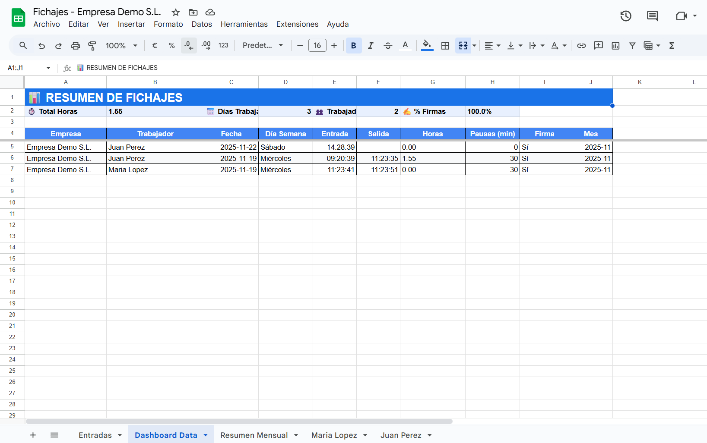

Legal desde el primer día · Sin apps · Sin tarjetas
Control horario legal, listo en 24h.
Tus trabajadores fichan en una tablet o en un enlace seguro.
Tú lo ves todo en tu Google Drive: registros, horas netas, pausas y resúmenes mensuales.
Sin instalar software, sin dar de alta usuarios y sin complicaciones.
Datos siempre en tu propia cuenta de Google.
Control total + cero dependencia de proveedores.
Vista real del sistema
Demo empresa · 2 trabajadores
Tablet fija con botones de entrada y salida.

Hoja de control en tu Google Drive.
SIDGI en 15 segundos
Un sistema pensado para talleres, almacenes y PYMES que solo quieren cumplir la normativa sin complicarse.
👆
1. Tus trabajadores pulsan un botón
Fichan entrada y salida desde una tablet fija o desde un enlace que reciben por email.
📄
2. Todo queda guardado en tu Google Drive
SIDGI no almacena nada. Los registros y firmas son tuyos, en tu propia cuenta de Google.
⏱️
3. Las horas y pausas se calculan solas
El sistema genera resúmenes por trabajador y por mes, sin fórmulas ni configuraciones.
Cómo funciona SIDGI
Un sistema simple con un flujo claro: fichar → guardar → calcular.
No hay aplicaciones, tarjetas, tornos ni configuraciones complicadas.
1. Tus trabajadores fichan en una tablet o enlace
SIDGI funciona con un enlace seguro o con una tablet fija colocada en el taller/almacén.
Pulsan su nombre, eligen entrada o salida y, si está activada, firman en pantalla.
2. Cada fichaje se guarda en tu Google Drive
Todos los datos (hora, fecha, firma opcional) se registran automáticamente en tu hoja de Google.
No instalas nada. No dependes de un servidor externo.
Los datos son tuyos y siempre están en tu Drive.
3. SIDGI calcula horas, pausas y totales
Las horas netas diarias y los totales mensuales se calculan solos.
El sistema genera automáticamente una hoja por trabajador y un resumen mensual para inspección.
Flujo real de funcionamiento
El proceso completo desde el fichaje hasta el resumen mensual ocurre sin que tengas que tocar nada.
Cómo funciona técnicamente (si quieres el detalle)
Para quienes quieren saber qué ocurre detrás:
Cómo se crea la hoja, dónde se guardan los datos y cómo se generan los resúmenes mensuales.
1. Alta del cliente (automática)
Cuando rellenas el formulario inicial, SIDGI crea automáticamente:
• Carpeta en tu Google Drive
• Hoja “Entradas” con estructura legal
• Hoja “Resumen Mensual”
• Hojas individuales para cada trabajador
• Página web de fichaje lista para tablet
2. Fichajes sin apps
El trabajador accede desde:
• Tablet en modo kiosco
• Enlace personalizado enviado por email
Cada fichaje se registra en la hoja y, si procede, se adjunta firma o foto.
3. Cálculo automático de horas
SIDGI aplica la normativa de tu empresa:
pausas, almuerzos, comidas, jornadas partidas o continuas.
Se actualiza automáticamente cada día.
4. Resumen mensual para inspección
El sistema ordena los fichajes por trabajador, calcula horas netas y genera un informe mensual.
Esto ocurre sin que tengas que tocar una sola fórmula.
¿Para quién es SIDGI?
Para empresas que quieren cumplir la ley **sin instalar software**, sin tarjetas,
sin apps y sin complicarse con hojas de cálculo infinitas.
🛠️
Talleres y fábricas
Para plantillas que entran y salen durante el día.
Fichaje rápido en tablet sin detener el trabajo.
• Entrada/Salida con un toque
• Firma opcional
• Control de pausas automático
📦
Almacenes y logística
Ideal para equipos distribuidos o turnos partidos.
No necesitan móvil; con la tablet es suficiente.
• Fichaje en zonas comunes
• Reportes mensuales por trabajador
• Histórico durante 4 años
🏪
Pequeñas empresas
Comercios, ferreterías y oficinas que quieren cumplir la normativa
sin meter otro software más en la empresa.
• Cálculo automático de horas
• Datos siempre en tu Drive
• Sin instalaciones
Cómo se ve SIDGI en empresas reales
Así es como lo están usando a día de hoy talleres, almacenes y comercios.
Tablet en la entrada del taller. Fichaje en 1 toque.
Hoja de Google ordenada por trabajador y día.
Resumen mensual con totales automáticos.
El cambio real que nota una empresa
Esto es lo que pasa cuando cambias de hojas manuales o fichas antiguas a SIDGI.
ANTES
• Hojas en papel o Excel desordenado
• Fichajes incompletos o sin firma
• Cálculo manual de horas
• Riesgo en una inspección
• Trabajadores olvidan fichar
• Tiempo perdido revisando todo
DESPUÉS
• Fichaje en 1 toque (tablet o enlace)
• Firma opcional integrada
• Horas calculadas automáticamente
• Hoja por trabajador + resumen mensual
• Historial legal archivado 4 años
• Menos errores, menos estrés, menos tiempo perdido
¿Por qué SIDGI y no otros sistemas?
Porque es el único que combina simplicidad real con cumplimiento legal
sin instalaciones, sin tarjetas, sin apps y sin bloquearte en un software propietario.
⚡
Instalación en 24h
Rellenas un formulario → tienes tu sistema listo.
Sin técnicos en tu empresa, sin obras, sin equipos especiales.
🧩
No cambia nada en tu empresa
Tus trabajadores solo ven una tablet con su nombre.
No tienen que instalar apps ni gestionar contraseñas.
🔒
Tus datos son tuyos
Todo se guarda en tu Google Drive.
No dependes de un software externo ni de un servidor ajeno.
Comparativa rápida
La mayoría de sistemas de fichaje o son demasiado complejos, o demasiado caros,
o no cumplen bien la normativa. SIDGI está justo en el punto perfecto.
Característica
SIDGI
Tarjetas / tornos
Apps móviles
Software tradicional
Instalación
En 24h
Técnicos + cableado
Cada empleado instala
Días de configuración
Requisitos
Solo una tablet / PC
Hardware especial
Móvil personal
Software complejo
Firma digital
Sí
No
No siempre
Depende del plan
Guardado de datos
Tu Google Drive (sin dependencia)
Proveedor externo
Proveedor externo
Base de datos cerrada
Cumplimiento legal
100% RD-ley 8/2019
Solo fichaje
Depende del uso
Sí, pero complejo
Coste mensual
Muy bajo
Muy alto
Depende de usuarios
Alto o con permanencias
Lo que hace único a SIDGI
No es solo un sistema de fichaje.
Es una forma de evitar problemas, ahorrar tiempo y ganar tranquilidad.
🧠
Automatización real
SIDGI trabaja por ti: calcula horas, pausa, totales, resúmenes y avisos.
No vuelves a tocar fórmulas.
📁
Todo queda ordenado solo
Cada mes la información aparece lista para revisar o enseñar en una inspección.
Todo organizado por trabajador, día y centro.
📨
Fichaje por email y tablet
Tus trabajadores no necesitan una app, ni recordar claves.
Reciben un email diario con sus botones de fichaje.
Inspección de Trabajo: qué miran y cómo SIDGI te protege
Si mañana viene una inspección, necesitan tres cosas:
registros fiables, ordenados y almacenados durante 4 años.
SIDGI lo prepara todo automáticamente.
📅
1. Registros diarios completos
Entrada y salida de cada trabajador, sin huecos ni errores.
SIDGI controla que no falte ningún fichaje.
🕒
2. Horas netas y pausas bien calculadas
Nada de cálculos manuales.
SIDGI descuenta pausas, almuerzos y comidas según tus reglas.
📂
3. Histórico archivado 4 años en tu Drive
SIDGI guarda automáticamente todos los meses ordenados por trabajador.
Si piden un mes concreto, lo tienes en 5 segundos.
“Si mañana viene Inspección, ¿qué entrego?”
Abres tu Google Drive → vas a la carpeta de SIDGI → eliges el mes →
descargas la hoja por trabajador o el resumen mensual.
Eso es exactamente lo que te van a pedir.
No hay PDFs que generar ni datos que exportar.
SIDGI deja todo preparado automáticamente.
Un caso real: cómo cambió la gestión en Puertas Lloris S.L.
Esta empresa tenía fichas en papel, Excel desordenados y riesgo en cada inspección.
Con SIDGI, el control horario es automático y transparente.
Zona de fichaje instalada en el taller: tablet fija con fichaje en un toque.
Todos los planes tienen exactamente lo mismo. Lo único que cambia es el número de trabajadores.
Funcionalidad
Básico
Estándar
Avanzado
Fichaje por email y tablet
✔️
✔️
✔️
Firma opcional
✔️
✔️
✔️
Hoja por trabajador
✔️
✔️
✔️
Resumen mensual automático
✔️
✔️
✔️
Histórico guardado 4 años
✔️
✔️
✔️
Ajuste de pausas según normativa
Opcional
✔️ Completo
✔️ Personalizable
Equipos grandes o varios centros
—
—
✔️ Ideal
Lo que dicen las empresas que ya usan SIDGI
Opiniones reales de talleres, almacenes y pequeñas empresas que buscaban simplicidad y cumplimiento legal.
“Antes teníamos hojas en papel y cada mes era un caos.
Con la tablet todos fichan en un toque y el resumen mensual sale solo.”
Puertas Lloris S.L.
Fabricación e instalación de puertas
“Nos preocupaba la inspección porque no teníamos un sistema claro.
Con SIDGI sabemos que todo queda archivado y listo para enseñar.”
Alumida S.L.
Carpintería metálica y cerramientos
“No quería que los trabajadores tuvieran que instalar apps ni crear cuentas.
SIDGI es tan simple que no he tenido que explicar nada.”
Ferretería Martínez S.L.
Ferretería industrial
Lo que más valoran las empresas
Estas son las cosas que más se repiten cuando una empresa nos cuenta por qué eligió SIDGI.
“Es muy simple”
El fichaje está a 1 toque.
Los trabajadores no se lían y no necesitan formación.
“No dependemos de nadie”
Los datos están en su Google Drive.
No hay permanencia ni bloqueo en plataformas externas.
“Si viene inspección, no hay estrés”
Cada mes queda archivado automáticamente.
Entregan lo que piden en segundos.
Preguntas frecuentes
Resolvemos las dudas que la mayoría de empresas tienen antes de empezar.
¿La firma digital es válida?
Sí. La firma se registra junto al fichaje, asociada al día y al trabajador.
Lo que inspección exige es trazabilidad y registro fiable, y SIDGI lo garantiza.
¿Qué pasa si un trabajador no tiene móvil?
Nada. La tablet fija es suficiente.
El móvil es solo un método extra para quien lo prefiera.
¿Cómo funciona el cálculo de horas?
SIDGI aplica las reglas de tu empresa: pausas, almuerzo, comida y jornada.
Cada día calcula automáticamente las horas netas y totales mensuales.
¿Quién ve mis datos?
Tú. Solo tú.
Todo se guarda en tu Google Drive.
Nosotros no almacenamos nada.
¿Necesito instalar algo?
No. Ni apps, ni programas, ni usuarios.
SIDGI funciona directamente sobre Google Sheets y Drive.
¿Cuánto se tarda en tenerlo listo?
Normalmente menos de 24h desde que recibimos tus datos.
No hay técnicos que enviar ni configuraciones complejas.
¿Qué pasa si un trabajador ficha mal?
La administración puede corregirlo en la hoja de Google.
SIDGI recalcula las horas automáticamente.
¿Puedo exportar los datos?
Claro. Todo está en tu Drive. Puedes descargar Excel, PDF o la hoja completa cuando quieras.
¿Quieres tener el control horario resuelto esta semana?
Envíanos el nombre de tu empresa, CIF y número de trabajadores.
Te instalamos el sistema en menos de 24h sin molestar a nadie.